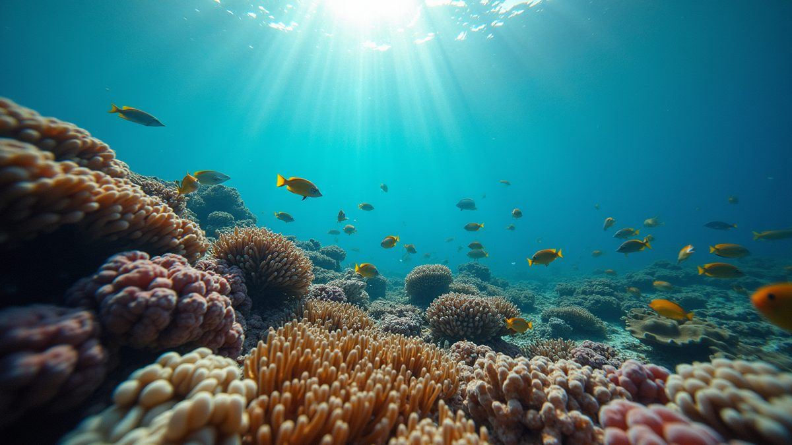

Miami Beginner Scuba Courses: Open Water Diver Opportunities in Miami

If you’ve ever dreamed of exploring the vibrant underwater world, Miami is the perfect place to start. The city offers a stunning variety of scuba diving experiences, from colorful coral reefs to fascinating shipwrecks. Whether you’re a complete beginner or looking to sharpen your skills, Miami’s diving scene has something for everyone. I’m excited to share everything you need to know about getting started with scuba diving here, including the best beginner courses and where to dive.
Why Miami Is a Top Spot for Miami Beginner Scuba Courses
Miami’s warm waters and diverse marine life make it an ideal location for learning to scuba dive. The visibility is often excellent, and the water temperature stays comfortable year-round. This means you can dive anytime without worrying about cold conditions.
Many dive schools in Miami offer beginner courses that are designed to be fun and safe. These courses cover everything from basic safety rules to how to use your equipment. You’ll get hands-on practice in a pool before heading out to the ocean. This step-by-step approach helps build confidence and skills at a comfortable pace.
Plus, Miami’s underwater environment is incredibly diverse. You can explore coral reefs teeming with tropical fish, swim alongside sea turtles, or investigate historic shipwrecks. This variety keeps every dive exciting and offers plenty of opportunities to learn new things.
What to Expect in Miami Beginner Scuba Courses
When you sign up for a beginner scuba course in Miami, you’ll typically start with a classroom session. Here, you’ll learn the basics of diving theory, including how pressure affects your body, how to communicate underwater, and safety procedures.
Next, you’ll move to confined water training, usually in a pool. This is where you’ll practice essential skills like breathing through a regulator, clearing your mask, and controlling your buoyancy. The instructors are there to guide you every step of the way, making sure you feel comfortable and confident.
Once you’ve mastered the basics, you’ll take part in open water dives. These are real dives in the ocean, where you’ll apply what you’ve learned in a natural setting. Miami offers calm, clear waters that are perfect for these first open water experiences.
Most beginner courses last about three to four days, but some schools offer flexible schedules to fit your availability. By the end of the course, you’ll earn a certification that allows you to dive anywhere in the world up to a certain depth.
Essential Gear and Preparation Tips for New Divers
Starting scuba diving means getting familiar with some new gear. Don’t worry - beginner courses usually provide all the necessary equipment, including masks, fins, snorkels, wetsuits, and tanks. However, if you plan to dive regularly, investing in your own mask and snorkel can make a big difference in comfort.
Here are some tips to prepare for your first dives:
- Stay hydrated - Diving can be physically demanding, so drink plenty of water.
- Get a good night’s sleep - Being well-rested helps you stay alert underwater.
- Avoid alcohol before diving - It can dehydrate you and affect your judgment.
- Wear sunscreen - Protect your skin before and after diving, but avoid applying it right before entering the water to protect marine life.
- Listen carefully to your instructor - They’re there to keep you safe and help you enjoy the experience.
If you have any medical conditions, be sure to discuss them with your instructor before starting the course. Safety is the top priority.
Exploring Miami’s Best Dive Sites After Your Course
Once you’ve completed your beginner course, the real adventure begins. Miami has a range of dive sites suitable for new divers. Here are some favorites:
- Biscayne National Park - This underwater park features beautiful coral reefs and abundant marine life. It’s a protected area, so the environment is pristine.
- Hollywood Reef - Known for its vibrant coral formations and schools of tropical fish, this site is perfect for relaxed dives.
- Blue Heron Bridge - Famous for macro photography, this site offers a chance to see tiny critters and unusual marine species in shallow waters.
Each site offers a unique experience, so I recommend trying a few to discover what you enjoy most. Many dive shops in Miami organize guided trips to these locations, which is a great way to explore safely and learn more about the local ecosystem.
How to Continue Your Diving Journey in Miami
Completing a beginner course is just the start. Miami offers plenty of opportunities to advance your skills and certifications. You can take specialty courses like underwater photography, night diving, or wreck diving. These courses deepen your knowledge and open up new ways to enjoy the underwater world.
Joining a local dive club or community is another fantastic way to stay connected. You’ll meet fellow divers, share tips, and find dive buddies for your next adventure. Miami’s diving community is welcoming and passionate, making it easy to feel at home.
If you want to keep exploring, consider getting certified as an Advanced Open Water Diver. This certification allows you to dive deeper and in more challenging conditions. Many dive shops in Miami offer packages that combine advanced training with exciting dive trips.
For those who love snorkeling, Miami also has excellent spots to enjoy the ocean without diving deep. Snorkeling is a great way to get comfortable in the water and observe marine life from the surface.
If you’re ready to take the plunge, the ocean is waiting, and your next adventure is just a dive away!